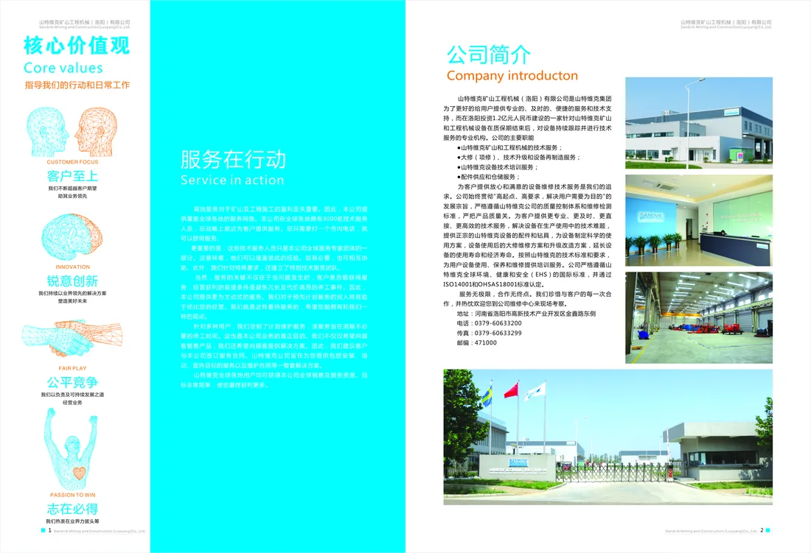

视觉设计作品选集 2020—2026
Selected Works20
从品牌传播到企业画册，
以清晰的信息结构与鲜明视觉，
回应不同商业场景。
Campaign · Digital

05Project
Groups
Groups
20Selected
Pieces
Pieces
01 / Profile
设计不只是让信息
被看见，更要让它
被理解、被记住。
这组作品覆盖品牌电商、商业活动、工业画册、地产营销与平台传播， 通过版式、色彩、图像和文字层级建立可识别的视觉系统。
- 品牌与电商视觉
- 画册与信息编排
- 活动与整合传播
- 地产与空间物料
02 / Selected Projects
精选项目
点击任意作品可查看大图
03 / Details
视觉系统，
服务真实场景。
每一类媒介都有不同的阅读节奏。作品从信息层级出发， 在屏幕、印刷与空间物料之间保持清晰一致的表达。
01品牌视觉Brand Visual
02画册编排Editorial Design
03商业传播Campaign Design
04数字内容Digital Content
End / Selected Works